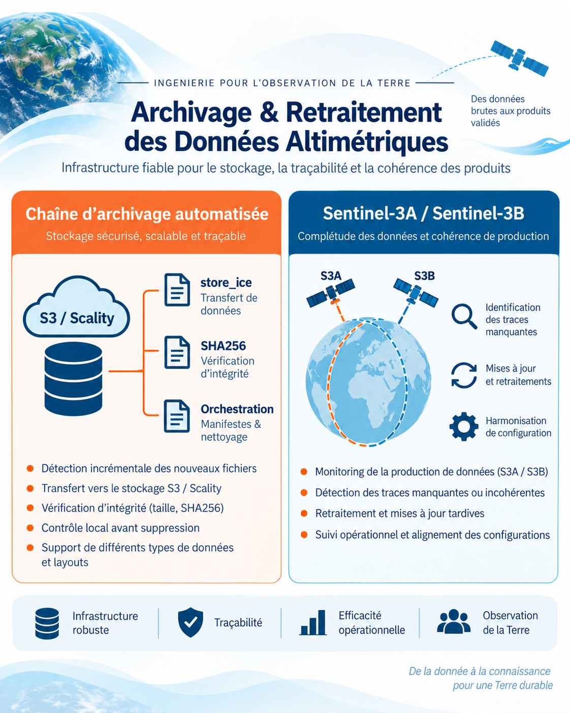
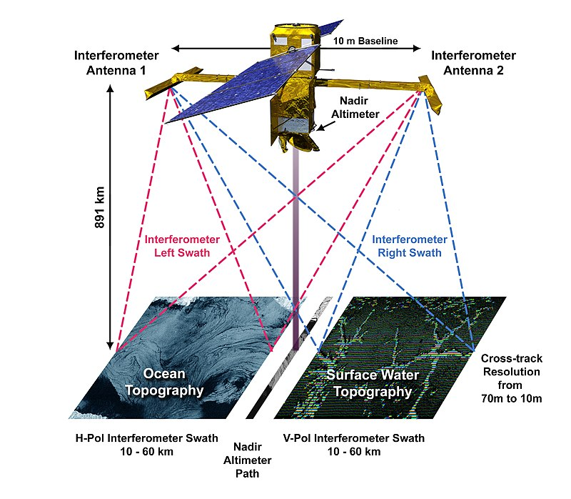
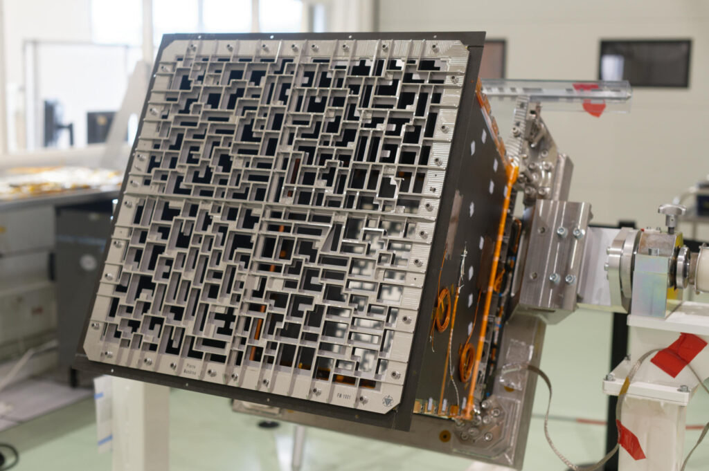
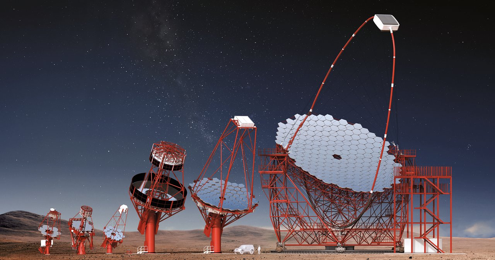
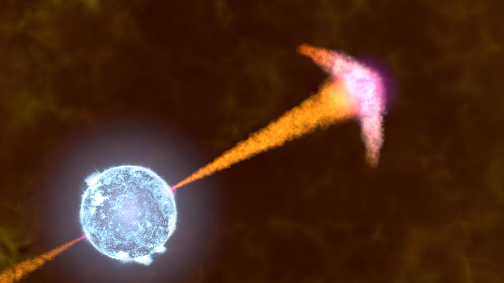
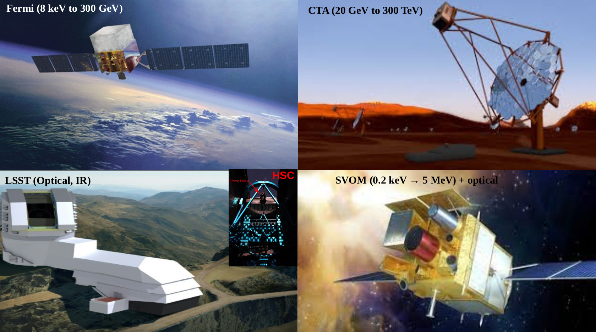
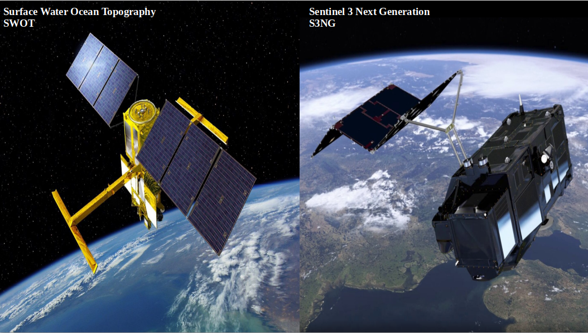

Manal Yassine, PhD
Scientific software engineer and researcher working across astrophysics, satellite altimetry and hydrology.
From gamma rays to hydrology.
A scientific journey spanning gamma-ray bursts, telescope calibration, data-processing pipelines, simulations, satellite altimetry and large-scale data-quality monitoring.
High-energy astrophysics · Fermi-LAT gamma-ray detection and source-direction reconstruction
Earth observation · SWOT satellite altimetry & hydrology
Science, instruments and data.
My work has moved across astrophysics and Earth observation while keeping a common thread: understanding instruments, processing scientific data, validating performance and extracting reliable physical information.

Data Engineering & CalVal Operations
Scientific software refactoring and CalVal-OIGDR/COPAS integration, automated S3/Scality archiving and restoration workflows, and large-scale Sentinel-3A/3B reprocessing and validation.

SWOT / Space Hydrology
Mean lake surfaces from SWOT KaRIn, automated quality monitoring over thousands of lakes, and advanced hydrological time-series processing using Kalman filtering and predictive models.

SWOT / KaRIn & S3NG / SAOOH
KaRIn data analysis and scientific visualisation, development of altimetric processing chains, and performance simulations for oceanic and hydrological observation modes.

SVOM / ECLAIRs
Calibration, response files, detector homogeneity and performance assessment.

LSST / HSC
Supernova pipeline validation, difference imaging, astrometric and photometric calibration.

Fermi / CTA
LAT data analysis, CTA simulations and spectral studies of gamma-ray bursts.

PhD · Fermi GRB Spectral Modelling
High-energy spectral analysis of gamma-ray bursts, physical modelling of MeV emission and detailed study of GRB 090926A using Fermi GBM/LAT data.
A connected scientific path.
The disciplines changed, but the working method remained closely related: physical modelling, simulations, instrument response, data validation and scientific software.
PhD · LUPM, Montpellier
High Energy Astrophysics, Fermi gamma-ray bursts, joint GBM/LAT spectral analysis.
INFN · Fermi & CTA, Trieste
GRB spectral analysis, CTA simulations and participation in the LAT Burst Advocate monitoring service.
CPPM · LSST DESC, Marseille
Validation of the supernova detection pipeline and work with HSC data.
IRAP · SVOM / ECLAIRs, Toulouse
Calibration and performance assessment of the ECLAIRs instrument.
CLS · SWOT & S3NG / SAOOH, Toulouse
Ocean topography, KaRIn data analysis, SAOOH onboard-processing-chain development and simulations.
CLS · SWOT Hydrology, Toulouse
Mean lake-surface estimation from high-resolution SWOT KaRIn data, automated data-quality monitoring, CCI hydrology products and advanced hydrological time-series processing.
CLS · Data Engineering & CalVal Operations, Toulouse
Refactoring and robustness improvements for CalVal-OIGDR/COPAS, automated S3/Scality archiving workflows, and large-scale Sentinel-3A/3B reprocessing, validation and quality monitoring.

